{kind=link}
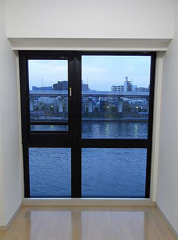
↑決め手となった不動産屋さんからの写真。 この写真を見て、「ああ、ここ！」って即決だった。 直接部屋を見ることなく、南九州から書類を交わして契約。 運命的なものは右往左往しなくてもぴたっと決まるね。 そんなわけで浅草に暮らすことになった。 暮らすことになってから「なんで浅草に？」って色んなひとに聞かれたけど、導かれたとしかいいようが無いんだよね。暮らすつもり無かったから。 でも、浅草暮らしは私にとって必要な経験だった。 浅草に引っ越したばかりのとき、自分の居場所がなくてふわふわとしてた。言葉のごとく宙をういて右へ左へとなにか落ち着く場所はないかと右往左往していた。 でも、浅草はまさにそんなひとのための街。 すべてを受け入れてなんでもありの街。 昔から住んでいるひとがいて、ふらりと短時間だけ過ごす旅行者もいて、さらに短時間の観光客もいる。 地面で寝る人がいれば、眺望すばらしいホテルで過ごす人もいる。 べらんめいな江戸っ子がいて、行ったことも聞いたこともないような外国から訪れる人もいる。 笑っている人をたくさん見た。その中で泣いている人もいた。 美味しいものを求めて有名店で行列している人を見た。けれどもゴミ箱の生ごみをあさっている人もいた。 美しい香りをまとう人がいるのに、呼吸すらできないほどのにおいを放つ人もいた。{kind=link}
{kind=link}
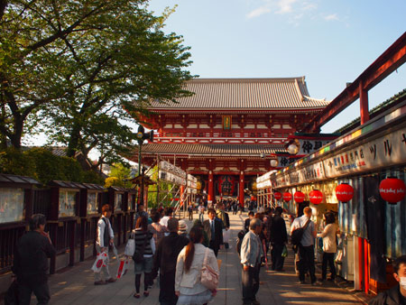
両極端なものが生きる街。 さまざまな陽と陰、富と貧、日常と非常、幸せと不幸がそこにあった。 観音様のお膝元、混沌とした街。{kind=link}
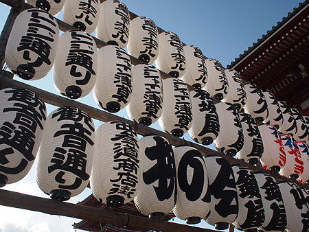
{kind=link}
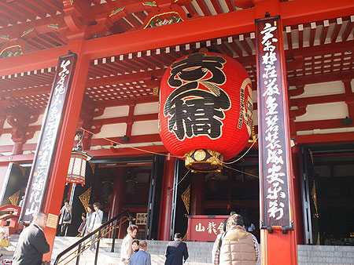
人は万物に許されて生きているってことなのかな？ だれもが受け入れられている。 私も受け入れられている。{kind=link}
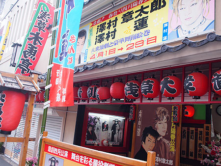
浅草に暮らすことになって、私は自分の主張や生きることに対し、攻める姿勢だけではなく、受け入れられるということを意識するようになった。 「受け入れられるということとはどういうことか」ということではなく、「どんなことをしても、必ず受け入れられる」という、相手に対する信頼について。{kind=link}
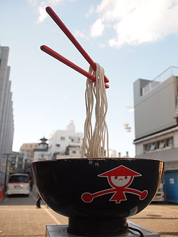
これって難しいの！ 「受け入れられるということはどういうことか」を考えることは意外と簡単なの。 考えるだけだもん！自己満足で終わっちゃうこともあるしね。 でも「どんなことをしても、必ず受け入れられる」と、相手を信頼することって難しいの。 確証がないことを押し切っちゃうのってちょっと怖い。{kind=link}
{kind=link}
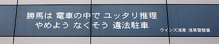
でも、信頼するようになったら自分の言いたいことを言えるようになった。 素直に言えるようになった！ …もしかしたら、「…なんてこと言ってるんだ！」って相手は憤慨してるかもしんないけど… まあ、そうだとしたらどっかで挽回すればいいしね。{kind=link}
{kind=link}
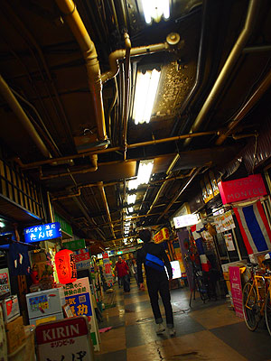
けど、言いたいことを言ってややこしくなったことなんてなかった。 今まで、自分がもんもんとややこしく考えすぎていたってことを知った。 みんな、寛容なこころを持っているのよね。 …とはいえ、それでも言えないこともあるけどね！オトナだもん！{kind=link}
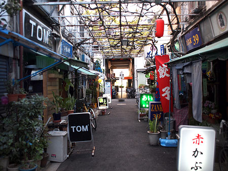
許すこと、許されることを信じること。{kind=link}
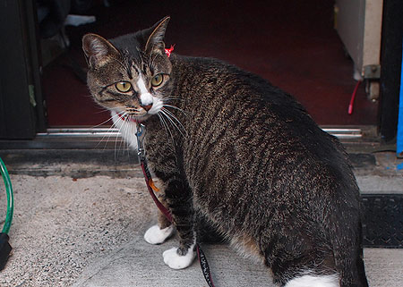
それを教えてくれた浅草に感謝。 そして許すということを一挙に背負う観音様に感謝。{kind=link}
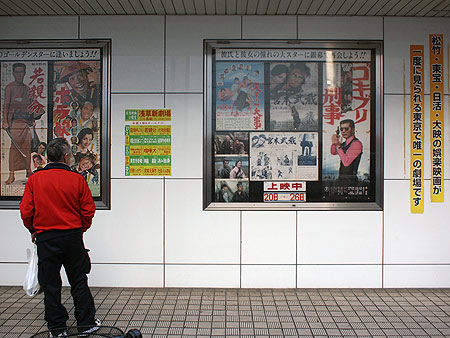
浅草卒業！{kind=link}
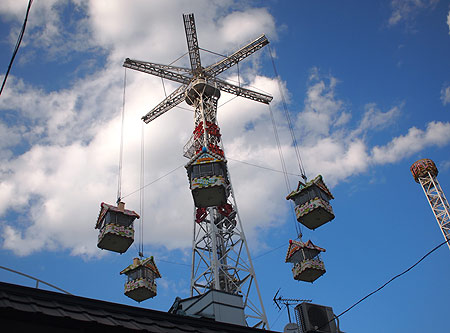
ありがとう！